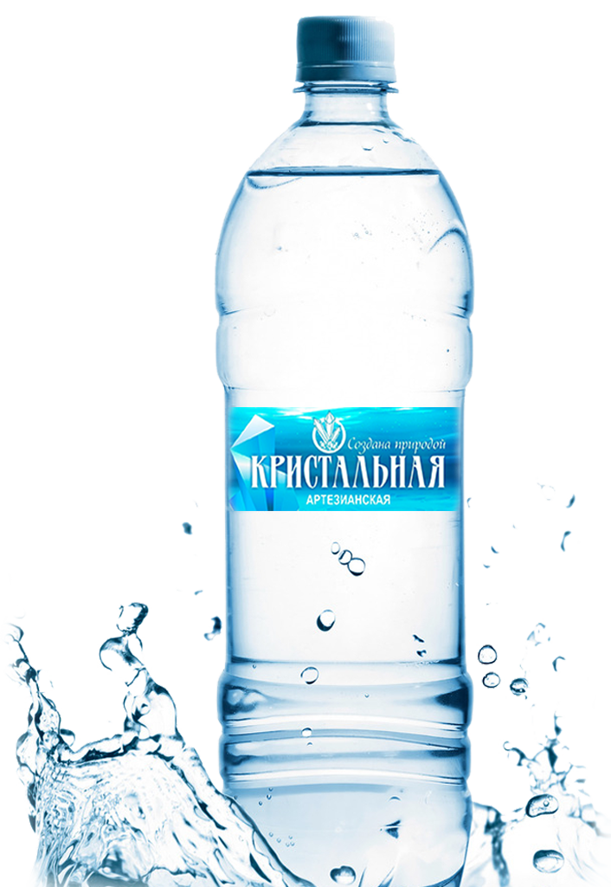

ПРИРОДНАЯ ПИТЬЕВАЯ ВОДА
КРИСТАЛЬНАЯ артезианская

Чистая вода из природных источников
Чистая вода из природных источников
Наша чистейшая, кристальная, артезианская вода добывается в экологически чистом уголке Приморского Края, в курортной зоне - пгт. Кировский, на новейшем оборудовании. Вода добывается из скважин, которые бурят на глубину минимум 100 метрова в защищенные от загрязнений водоносные горизонты. Нам безусловно важно, чтобы наша вода несла в себе максимальную пользу для человека. Это одна из немногих вод в Приморье, которая может похвастаться сбалансированным натуральным составом.
"Кристальная артезианская" природная аитьевая вода, негазированная, 0.5 л
"Кристальная артезианская" природная аитьевая вода, негазированная, 1 л
"Кристальная артезианская" природная аитьевая вода, газированная, 5 л